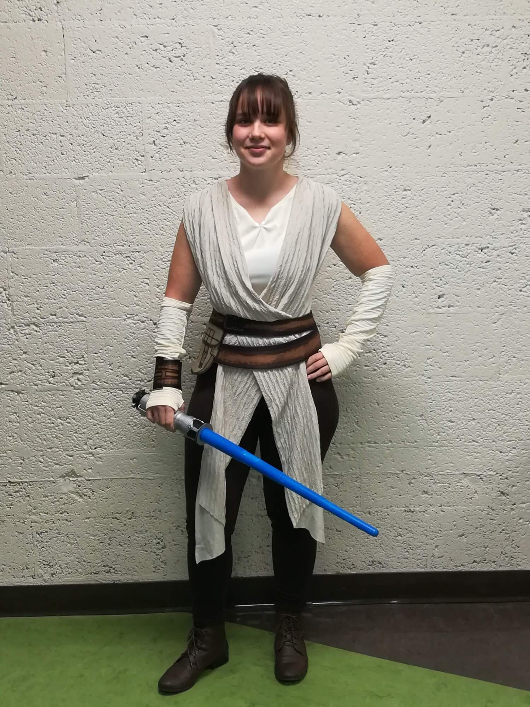
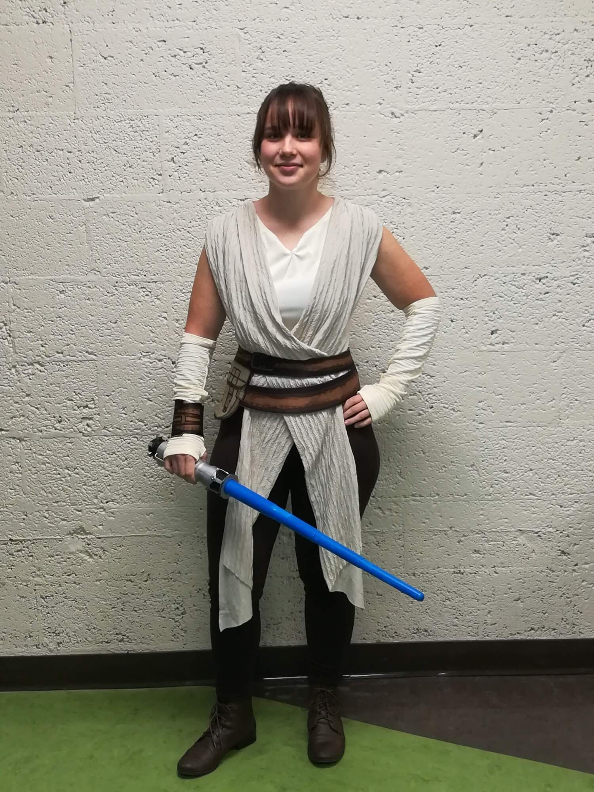
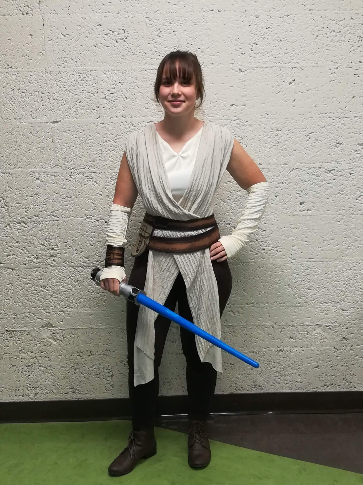

This here is a small site that highlights my time in high school.
I have had many amazing people to share the experience with.
Alright, let's get into it!
~Homecomings~
Small Sadie attending her first high school dance ever, accompanied
by two of her good buddies Ivy (middle) + Sarah (right). While I apparently
couldn't be bothered to look at the camera, we all unintentionally matched
w/ floral!
Fast forward to junior year and I'm rocking a two piece w/ my handsome
friend Josh as my date.
Enough pictures of me in dresses, look at my friends! Taken atop Brooke's (left) stairs,
this is my favorite photo I took for my senior hoco. Pictured top right in the magnificent
green is Maia and right beneath her in the glorious purple is Ivy.
~Halloweens~
While I'm not quite sure how Halloween managed to get an exclusive category in the web
montage of my high school life, I managed to have some pretty rad Halloween celebrations
in high school. Pictured on the left is Min, our 10th grade foreign exchange student from
South Korea dressed as Little Red Riding Hood. In the middle is Sarah rocking a homemade
Princess Zelda costume. And I'm on the right with my $10 Donatello TMNT costume.
Oh dear, this sure is a special one. In junior year, I had the privilege to go trick-or-treating
with Elsa! Well, it was actually Caleb but he was just as cool if you catch my drift. Pictured on
the right is me in an oversized costume. And yes, I did attend Cross Country practice with the full
suit on.

Yet another epic Halloween this past year. I got to spend it w/ Brynn (left) as Eleven from
Stranger Things, Sarah (middle) as, and Ivy (right) as the Miraculous Lady Bug. Dressed with another
$10 steal from the local Halloween Superstore, I went as Rey from Star Wars.
~Cross Country~
This entire section is what I like to call: "It's just a Cross Country thing."
Pictured here is our Coach Ruben collecting our phones on our way down to States to ensue
some quality bonding time. You can see the devilish smile on his face that knows we will
be forced to converse with one another. My, I never heard of such a thing.
These two photos were taken during Cross Country camp, which is a whole other thing in itself.
Both pictured are in the middle of intense games. The first being 4-square: a common activity
enjoyed at camp inbetween the grueling runs. And second, a battle between the hook-things that
help you not die on rope courses.
I'd like to call this one "It's just a Cross Country thing 2.0" After our last conference
race of the season, we made our way to grocery store to carbload on ice cream + pizza.
This was taken the same day as the above photo. We squished in our cars and devoured
the aforementioned pizza much to our delights. Judy is pictured in the middle with the
huge grin on her face, with Maia on the right.
While it's not exactly Cross Country, it's still running, so same thing, right? During an
off-season run through the snow, Robbie (left) is having a grand ol' time, while Bill (middle)
and I are struggling a bit, though I don't think you can tell that by the big smile on his face.
Note the matching Ellsworth sweatpants (I was wearing mine too.)
Let's change gears to the other running sport I do, Track & Field, and appreciate
this very wholesome photo of me and my friend, Brooke. It seems we just finished a relay,
given the silver baton in my hand.
~All the other things~
On a Washington D.C. school field trip, I'm sitting on a fountain with my considerably
shorter than normal hair. Ah, the good ol' days.


 
